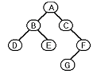
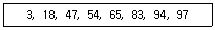
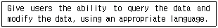
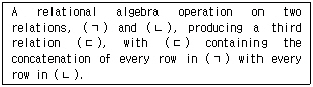
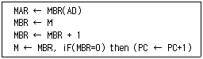
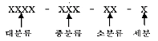
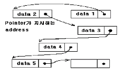
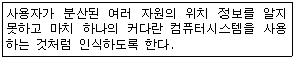
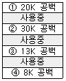
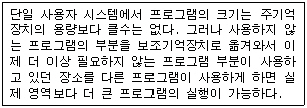

정보처리산업기사 (2002-05-26 기출문제)
1과목: 데이터 베이스
1. 릴레이션 R에는 10개의 튜플이 있고, 다른 릴레이션 S에는 5개의 튜플이 있을 때, 두 개의 릴레이션 R과 S의 교차곱(cartesian product) 연산을 수행한 후의 튜플의 수는?
- 15개
- 50개
- 10개
- 2개
(정답률: 76%)

2. 현실 세계의 정보들을 컴퓨터에 표현하기 위해서 단순화, 추상화 형태로 체계적으로 표현한 개념적 모형을 무엇이라 하는가?
- 현실 모델
- 정보 모델
- 개념 스키마 모델
- 데이터 모델
(정답률: 40%)
3. 그림의 이진트리를 Preorder로 운행하고자 한다. 트리의 각 노드를 방문한 순서로 옳게 나열된 것은?

- A-B-D-E-C-F-G
- D-B-E-A-C-G-F
- D-E-B-G-F-C-A
- A-B-C-D-E-F-G
(정답률: 70%)
4. 스키마, 도메인, 테이블, 뷰, 인덱스의 제거시 사용되는 SQL 정의어는?
- CREATE 문
- DROP 문
- ALTER 문
- CLOSE 문
(정답률: 94%)
5. 데이터베이스관리시스템(DBMS)의 필수 기능에 속하지 않는 것은?
- 기본 기능
- 정의 기능
- 제어 기능
- 조작 기능
(정답률: 83%)
6. 아래 자료에서 65를 찾기 위하여 2진 검색할 경우 비교해야 할 횟수는?

- 2
- 3
- 4
- 5
(정답률: 52%)
7. E- R 모델에 대한 설명으로 옳지 않은 것은?
- 정보모델링 과정에서 개념 세계의 정보구조로 표현하기 위한 규약
- E-R Diagram에서 사각형은 개체와 개체간의 관계를, 다이아몬드는 개체의 타입을 표현한다.
- 계층데이터모델에서는 n:m 관계표현은 불가능하다.
- 네트워크 데이터모델에서 1:n 관계에 있는 두 개의 레코드 타입을 각각 오너(owner), 멤버(member)라 하고 이들 간의 관계를 오너-멤버 관계라고 한다.
(정답률: 62%)
8. 기억 공간의 낭비 원인이 되는 널 링크 부분을 트리 순회시 이용되도록 구성한 트리를 무엇이라고 하는가?
- 신장 트리(spanning tree)
- 스레드 이진 트리(thread binary tree)
- 완전 이진 트리(complete binary tree)
- 경사 트리(skewed tree)
(정답률: 49%)
9. 다음 SQL 문의 형식에서 괄호에 들어갈 단어는?
- When
- Where
- What
- How
(정답률: 83%)
10. 자료의 입출력 형태가 FIFO(first-in-first-out) 방식인 자료구조는?
- 데크(deque)
- 연결리스트(linked list)
- 큐(queue)
- 스택(stack)
(정답률: 71%)
11. 뷰(view)에 대한 설명 중 가장 거리가 먼 것은?
- 뷰는 원칙적으로 하나 이상의 기본 테이블로부터 유도된 이름을 가진 가상 테이블을 말한다.
- 기본 테이블은 물리적으로 구현되어 데이터가 실제로 저장되지만 뷰는 물리적으로 구현되어 있지 않다.
- 뷰는 근본적으로 기본 테이블로부터 유도되지만 일단 정의된 뷰가 또 다른 뷰의 정의에 기초가 될 수도 있다.
- 뷰의 정의만 시스템 내에 저장하였다가 필요시 실행 시간에 테이블을 구축하므로 시스템 검색에 있어서 뷰와 기본 테이블 사이에 약간의 차이가 있다.
(정답률: 60%)
12. 다음 설명과 가장 관련 있는 것은?

- DDL
- DCL
- QBL
- DML
(정답률: 55%)
13. 다음은 어떤 관계대수 연산에 관한 설명인가?

- Join
- Projection
- Union
- Cartesian Product
(정답률: 28%)
14. 어떤 릴레이션 R이 2NF를 만족하면서 키에 속하지 않는 모든 애트리뷰트가 기본 키에 대하여 이행적 함수 종속이 아니면 어떤 정규형에 해당하는가?
- 제 1정규형
- 제 2정규형
- 제 3정규형
- 제 1, 2, 3정규형
(정답률: 63%)
15. 외부 정렬(external sort)에 해당하지 않는 것은?
- balanced sort
- cascade sort
- heap sort
- polyphase sort
(정답률: 56%)
16. 데이터베이스에서 아직 알려지지 않거나 모르는 값으로서 "해당없음" 등의 이유로 정보 부재를 나타내기 위해 사용하는 특수한 데이터 값을 무엇이라 하는가?
- 원자값(atomic value)
- 참조값(reference value)
- 무결값(integrity value)
- 널값(null value)
(정답률: 86%)
17. 데이터베이스 설계에 적용되는 개념 스키마(Conceptual - Schema)에 대해서 바르게 기술한 것은?
- 데이터베이스에 대한 접근 권한이나 무결성 규칙에 대해서 기술한 것이다.
- 데이터베이스에 대한 사용자의 논리적인 관점을 기술한 것이다.
- 데이터베이스에 대한 물리적인 저장 구조를 기술한 것이다.
- 데이터 사전에 수록된 데이터를 위해 사용된 데이터를 의미한다.
(정답률: 44%)
18. 관계형 데이터베이스의 릴레이션을 조작할 때 발생하는 이상현상(anomaly)에 관한 설명으로 적절하지 않은 것은?
- 데이터의 종속으로 인해 발생하는 이상현상에는 삭제이상, 삽입이상, 갱신이상이 있다.
- 릴레이션의 한 튜플을 삭제함으로써 연쇄삭제로 인해 정보의 손실을 발생시키는 현상이 삭제이상이다.
- 데이터를 삽입할 때 불필요한 데이터가 함께 삽입되는 현상을 삽입이상이라 한다.
- 튜플 중에서 일부 속성을 갱신함으로써 정보의 모순성이 발생하는 현상이 갱신이상이다.
(정답률: 30%)
19. 선형 자료구조가 아닌 것은?
- 스택(stack)
- 큐(queue)
- 데큐(deque)
- 그래프(graph)
(정답률: 87%)
20. 데이터베이스의 장점으로 관계가 먼 것은?
- 구축 비용이 저렴하다.
- 많은 양의 종이파일이 간소화 된다.
- 정확한 최신의 정보이용이 가능하다.
- 데이터 처리속도가 증가된다.
(정답률: 80%)
2과목: 전자 계산기 구조
21. 음수를 표시하는 방법이 아닌 것은?
- 1의 보수(1'S Complement)
- 부호 및 크기(Signed Magnitude)
- 2의 보수(2'S Complement)
- 10의 보수(10'S Complement)
(정답률: 59%)
22. 계산 결과를 시험할 필요가 있을 때 계산 결과가 기억장치에 기억 될 뿐 아니라 중앙처리장치에도 남아 있어서 중앙처리장치 내에서 직접 시험이 가능하므로 시간이 절약되는 인스트럭션 형식은?
- 3주소 인스트럭션 형식
- 2주소 인스트럭션 형식
- 1주소 인스트럭션 형식
- 0주소 인스트럭션 형식
(정답률: 26%)
23. 다음 Interrupt 중 가장 우선 순위가 높은 것은?
- Program Interrupt
- I/O Interrupt
- Paging Interrupt
- Power Failure Interrupt
(정답률: 58%)
24. SRAM과 DRAM을 설명한 것으로 옳은 것은?
- SRAM은 재충전이 필요없는 메모리이다.
- DRAM은 SRAM에 비해 속도가 빠르다.
- SRAM의 소비전력이 DRAM 보다 낮다.
- DRAM의 Memory Cell은 Flip Flop으로 구성되어 있다.
(정답률: 49%)
25. 전자계산기를 이용하기 위하여 사용하는 언어를 크게 3가지의 계층으로 구분할 수 있다. 이에 관계없는 것은?
- 레지스터
- 기계어
- 어셈블리어
- 컴파일러
(정답률: 70%)
26. 2진법의 수 1101.11을 10진법으로 표시하면?
- 11.75
- 13.55
- 13.75
- 15.3
(정답률: 71%)
27. 기계어에 대한 설명으로 옳지 않은 것은?
- 수행 시간이 신속하다.
- 하드웨어 운용이 비효율적이다.
- 프로그램 과정이 불편하다.
- 언어의 호환성이 없다.
(정답률: 48%)
28. 인터럽트가 컴퓨터에서 발생하였을 때 프로세서의 인터럽트 서비스가 특정의 장소로 점프하도록 되어 있는 것과 관계있는 것은?
- 인터럽트 인에이블(enable)
- 인터럽트 핸들러(handler)
- 벡터 인터럽트(vectored interrupt)
- 인터럽트 마스크
(정답률: 60%)
29. 자기 보수(self complementing) 코드인 것은?
- 3-초과 코드
- BCD(8421) 코드
- 패리티 코드
- 그레이 코드
(정답률: 35%)
30. 컴퓨터의 성능을 높이기 위하여 명령의 처리속도를 CPU의 속도와 같도록 하기 위해서 기억장치와 CPU 사이에 사용하는 기억장치는?
- ROM
- virtual memory
- DRAM
- cache memory
(정답률: 75%)
31. Assembly 언어로 작성된 Source Program을 Assembler를 이용하여 기계어로 번역하는 것은?
- Translation
- Compile
- Coding
- Assemble
(정답률: 30%)
32. 2진수 1001을 그레이코드로 변환하면?
- 1101
- 1110
- 1100
- 1111
(정답률: 60%)
33. stack의 주소지정방식은?
- 0-Address
- 1-Address
- 2-Address
- 3-Address
(정답률: 68%)
34. 가상기억체제에서 page fault가 발생하면 희생 페이지를 결정해서 보조기억장치의 이전 위치에 기억시키고 새로운 페이지를 이전 희생된 페이지가 있던 곳에 위치시키는 것을 무엇이라 하는가?
- thrashing
- staging
- miss
- throughput
(정답률: 29%)
35. 십진수 956에 대한 BCD 코드(Binary Coded Decimal)는?
- 1001 0101 0110
- 1101 0110 0101
- 1000 0101 0110
- 1010 0110 0101
(정답률: 78%)
36. 컴퓨터의 내부 상태를 나타내는 레지스터(register)는?
- 버퍼 레지스터(buffer register)
- 스테이터스 레지스터(status register)
- 인덱스 레지스터(index register)
- 명령 레지스터(instruction register)
(정답률: 61%)
37. 명령 코드가 명령을 수행할 수 있게 필요한 제어 기능을 제공해 주는 것은?
- 레지스터
- 누산기
- 스택
- CPU에 있는 제어 장치
(정답률: 48%)
38. 2 바이트로 나타낼 수 있는 수의 표현 범위는?
- 28-1
- 64k
- 128k
- 1M
(정답률: 30%)
39. 다음의 예는 실행 주기(execution cycle) 중에서 어떤 명령을 나타내는 것인가?

- JMP
- AND
- ISZ
- BSA
(정답률: 33%)
40. Virtual Memory에 관한 설명 중 옳은 것은?
- 많은 데이터를 주기억 장치에서 한번에 가져오는 것을 말함
- 사용자가 보조 메모리의 총 용량에 해당하는 기억 장소를 컴퓨터가 갖고 있는 것처럼 가상하고, 프로그램을 짤 수 있는 것을 말함
- 데이터를 미리 주기억 장치에 넣는 것을 말함
- 자주 참조되는 프로그램과 데이터를 모은 메모리다.
(정답률: 66%)
3과목: 시스템분석설계
41. 입력의 형식 중 발생한 정보를 원시 전표 위에 기록하고 일정 시간 단위로 수집하여 매체화 전문 기기에서 매체화해서 일괄 입력하는 시스템은?
- 집중 입력 방식
- 분산 입력 방식
- 직접 입력 방식
- 반환 입력 방식
(정답률: 64%)
42. 자료 사전에 사용되는 기호 중 반복을 의미하는 것은?
- +
- ( )
- [ ]
- { }
(정답률: 71%)
43. 유지보수의 종류에 해당하지 않는 것은?
- 수정 유지 보수(Corrective Maintenance)
- 적응 유지 보수(Adaptive Maintenance)
- 순환 유지보수(Recursive Maintenance)
- 예방 유지보수(Preventive Maintenance)
(정답률: 35%)
44. 이미 정의되어 있는 상위 클래스의 메소드를 비롯한 모든 속성을 하위 클래스가 물려받는 것으로, 이를 이용하면 하위 클래스는 상위 클래스의 메소드 및 모든 속성을 자신의 클래스 내에 다시 정의하지 않고서도 자신의 속성으로 가질 수 있는 것은?
- method
- information hidden
- inheritance
- polymorphism
(정답률: 53%)
45. 모듈의 결합도는 설계에 대한 품질 평가 방법의 하나로서 두 모듈 간의 상호의존도를 측정하는 것이다. 다음 중 설계 품질이 가장 좋은 결합도는?
- 공통 결합
- 자료 결합
- 제어 결합
- 외부 결합
(정답률: 40%)
46. 입력 자료의 어떤 항목 내용이 논리적으로 정해진 범위내에 있는가를 체크하는 방법은?
- 유효 범위 체크(Limit check)
- 체크 디짓 체크(Check digit check)
- 형식 체크(Format check)
- 균형 체크(Balance check)
(정답률: 76%)
47. 구조적 프로그램의 기본 구조가 아닌 것은?
- 순차(sequence) 구조
- 선택(selection) 구조
- 반복(iteration) 구조
- 처리(process) 구조
(정답률: 39%)
48. 객체지향 기본요소 중에서 유사한 객체를 묶어 하나의 공통된 특성을 표현하는 요소는?
- Class
- Inheritance
- Instance
- Message
(정답률: 72%)
49. 시스템 설계를 위한 분석과정에 대한 설명으로 옳지 않은 것은?
- 환경의 변화에 유연성 있는 시스템을 개발하기 위해 기업환경 조사를 한다.
- 개발과정과 현장은 별개이므로 현장조사를 상세히 할 필요는 없다.
- 기업이 필요로 하는 기능과 활동을 조사한다.
- 기능분석을 위한 도구를 사용하여 모델을 설계한다.
(정답률: 82%)
50. 다음과 같은 방법으로 코드를 분류하는 방법은?

- Significant Digital Code
- Group Classification Code
- Sequence Code
- Block Code
(정답률: 68%)
51. 프로세스의 표준 처리 패턴 중 동일한 파일 형식을 가지고 있는 두 개 이상의 파일을 하나로 정리하는 처리로서, 컴퓨터의 처리 효율이나 파일의 보관 등을 고려해서 하나의 파일로 통합하는 것은?
- Conversion
- Sort
- Merge
- Matching
(정답률: 73%)
52. 그림과 같이 관련되는 데이터 레코드들이 물리적으로는 떨어져 있으나 데이터 레코드에 포함되어 있는 포인터가 순차적으로 데이터 레코드가 저장되어 있는 주소를 지시함으로써 데이터 구조관계를 유지하는 파일 편성방법은?

- 순차 편성방법(sequential organization)
- 색인순차 편성방법(indexed sequential organization)
- 랜덤 편성방법(random organization)
- 리스트 편성방법(list organization)
(정답률: 34%)
53. 코드의 오류 형태 중 입력시 좌우 자리를 바꾸어 발생하는 에러는?
- transposition error
- transcription error
- random error
- omission error
(정답률: 80%)
54. 색인 순차(index sequence) 편성 파일에서 인덱스 영역(index area)에 해당하지 않는 것은?
- 트랙 인덱스 영역(track index area)
- 실린더 인덱스 영역(cylinder index area)
- 기본 인덱스 영역(prime index area)
- 마스터 인덱스 영역(master index area)
(정답률: 64%)
55. 코드의 기능으로 거리가 먼 것은?
- 표준화기능
- 분류기능
- 간소화기능
- 호환기능
(정답률: 45%)
56. 시스템 문서화의 효과로 거리가 먼 것은?
- 시스템 개발 후 시스템의 유지 보수가 용이하다.
- 시스템 개발팀에서 운용팀으로 인계 인수가 쉽다.
- 시스템 개발 중 추가 변경에 따른 혼란을 방지한다.
- 시스템 에러 발생시 책임 소재를 분명히 한다.
(정답률: 65%)
57. 시스템을 평가하는 목적으로 거리가 먼 것은?
- 시스템 운영관리의 타당성 파악
- 시스템의 성능과 유용도 판단
- 처리비용과 효율면에서 개선점 파악
- 시스템 운영요원의 재훈련
(정답률: 79%)
58. 객체(Object)에 관한 설명으로 옳지 않은 것은?
- 객체는 데이터 구조와 그 위에서 수행되는 함수들을 가지고 있는 소프트웨어 모듈이다.
- 객체는 캡슐화와 데이터추상화로 설명된다.
- 객체는 자신의 상태를 가지고 있고, 그 상태는 어떠한 경우에도 변하지 않는다.
- 객체는 데이터와 그 데이터를 조작하기 위한 연산들을 결합시킨 실체다.
(정답률: 70%)
59. 시스템 분석자와 설계자가 갖추어야 할 조건에 대한 설명으로 옳지 않은 것은?
- 기업의 목적을 정확히 이해해야 한다.
- 업계의 동향 및 관계 법규 등도 파악해야 한다.
- 컴퓨터 기술과 관리 기법을 알아야 한다
- 현장 분석 경험은 중요하지 않다.
(정답률: 87%)
60. 시스템의 기본 요소와 관련없는 것은?
- 입력
- 출력
- 처리
- 평가
(정답률: 79%)
4과목: 운영체제
61. UNIX에서 명령들을 해석하는 것으로 명령 해석기와 같은 기능을 제공하는 것은?
- 쉘(Shell)
- 커널(Kernel)
- 파일시스템(File System)
- FAT(File Allocation Table)
(정답률: 67%)
62. 모니터에 관한 설명으로 옳지 않은 것은?
- 자원 요구 프로세스는 그 자원 관련 모니터 진입부를 반드시 호출한다.
- 모니터 외부의 프로세스는 모니터 내부의 데이터를 직접 액세스 할 수 없다.
- 정보의 은폐 기법을 사용한다.
- 한 순간에 두개 이상의 프로세스가 모니터에 진입할 수 있다.
(정답률: 45%)
63. UNIX 파일 시스템에서 inode의 내용이 아닌 것은?
- 파일 소유자의 사용자 식별
- 보호 비트
- 디스크의 실제 주소
- 파일이 최초로 수정된 시간
(정답률: 49%)
64. 아래의 내용이 설명하는 분산 시스템의 특징은 무엇인가?

- transparency
- transaction
- scalability
- fault tolerance
(정답률: 26%)
65. 파일 디스크립터에 포함되는 내용이 아닌 것은?
- 파일의 이름
- 보조기억장치에서의 파일의 위치
- 생성된 날짜와 시간
- 파일 오류에 대한 수정 방법
(정답률: 76%)
66. 구역성(locality)에 대한 설명으로 옳지 않은 것은?
- 시간구역성의 예로는 순환, 부프로그램, 스택 등이 있다.
- 구역성에는 시간구역성과 공간구역성이 있다.
- 어떤 프로세스를 효과적으로 실행하기 위해 주기억장 치에 유지되어야 하는 페이지들의 집합이다.
- 프로세서들은 기억장치내의 정보를 균일하게 엑세스 하는 것이 아니라, 어느 한순간에 특정 부분을 집중적으로 참조한다.
(정답률: 57%)
67. 운영체제의 발전 과정으로 옳은 것은?
- 분산처리 → 실시간처리 → 일괄처리
- 일괄처리 → 분산처리 → 실시간처리
- 분산처리 → 일괄처리 → 실시간처리
- 일괄처리 → 실시간처리 → 분산처리
(정답률: 48%)
68. 가상기억장치(virtual memory)의 일반적인 구현방법에 해당하는 것은?
- 스래싱(thrashing), 집약(compaction)
- 세그멘테이션(segmentation), 스래싱(thrashing)
- 모니터(monitor), 오버레이(overlay)
- 페이징(paging), 세그멘테이션(segmentation)
(정답률: 60%)
69. CPU 스케줄링 기법에서 작업이 끝나기 까지의 실행시간 추정치가 가장 작은 작업을 먼저 실행시키는 기법은?
- FIFO
- SRT
- SJF
- HRN
(정답률: 61%)
70. 운영체제가 프로세스에 대한 중요한 정보를 저장해 놓을 수 있는 저장장소를 PCB(Process Control Block)라고 한다. PCB가 갖는 정보가 아닌 것은?
- 프로세스의 현 상태
- 프로세스의 우선 순위
- 프로세스의 고유한 식별자
- 프로세스 오류의 수정 방법
(정답률: 73%)
71. 현재 기억장치의 상태는 그림과 같다. 13K의 저장공간을 요구하는 작업이 발생하였을 때 최악적합(Worst-fit) 전략을 적용할 경우 배치될 장소는?

- ① 20K 공백
- ② 30K 공백
- ③ 13K 공백
- ④ 8K 공백
(정답률: 66%)
72. 분산처리 시스템의 장점에 해당하지 않는 것은?
- 계산 속도 향상
- 보안의 용이성 향상
- 신뢰성 향상
- 자원 공유 증대
(정답률: 63%)
73. 강결합(tightly-coupled) 시스템과 약결합(loosely-coupled) 시스템에 대한 설명으로 옳지 않은 것은?
- 약결합 시스템은 각각의 시스템이 별도의 운영체제를 가진다.
- 약결합 시스템은 하나의 저장장치를 공유한다.
- 강결합 시스템은 하나의 운영체제가 모든 처리기와 시스템 하드웨어를 제어한다.
- 약결합 시스템은 메시지를 사용하여 상호 통신을 한다.
(정답률: 46%)
74. 수행중인 프로그램에서 0(zero)으로 나누는 연산이나 스택의 오버플로우 등과 같은 오류시 발생하는 인터럽트는?
- 입/출력 인터럽트
- SVC(Supervisor Call) 인터럽트
- 프로그램 검사 인터럽트
- 기계 검사 인터럽트
(정답률: 45%)
75. HRN(Highest Response-ratio Next) 스케줄링 방식의 특징으로 옳지 않은 것은?
- 비선점 스케줄링 기법이다.
- 긴 작업과 짧은 작업간의 지나친 불평등을 보완하는 기법이다.
- 우선순위 결정식은 (대기시간+서비스시간)/대기시간 이다.
- 우선순위 결정식에서 대기시간이 분자에 있으므로 긴 작업도 대기시간이 큰 경우에는 우선 순위가 높아진다.
(정답률: 57%)
76. SCAN 디스크 스케줄링 기법의 특징이 아닌 것은?
- SSTF(SHORTEST SEEK TIME FIRST)의 개선 기법이다.
- 도착 순서에 따라 실행 순서가 고정된다는 점에서 공평하다.
- 진행방향상의 가장 짧은 거리에 있는 요청을 먼저 수행한다.
- 실린더 지향 전략이다.
(정답률: 49%)
77. UNIX에서 커널의 기능이 아닌 것은?
- 프로세스 관리 기능
- 기억장치 관리 기능
- 입/출력 관리 기능
- 명령어 해독 기능
(정답률: 63%)
78. 다음 설명이 의미하는 것은?

- 오버레이(overlay)
- 세그먼트(segment)
- 페이지(page)
- 스레드(thread)
(정답률: 51%)
79. 페이징 시스템에서 실 기억장치는 일반적으로 고정된 크기의 페이지 들로 분리된다. 페이지 틀에 관한 설명으로 옳지 않은 것은?
- 페이지 크기가 클수록 더 큰 페이지 테이블이 필요하게 된다.
- 페이지 크기가 크면 디스크로부터 I/O 전송에 소모되는 시간은 커지게 된다.
- 작은 크기의 페이지를 사용하는 경우 프로그램은 보다 알찬 working set을 가질 수 있게 된다.
- 페이지 크기가 작을수록 내부 단편화는 커지게 된다.
(정답률: 34%)
80. CPU 스케쥴링에 있어서 선점 알고리즘에 해당하는 것은?
- RR(Round Robin)
- HRN(Highest Response-ratio Next)
- SJF(Shortest Job First)
- FCFS(First Come First Service)
(정답률: 50%)
5과목: 정보통신개론
81. 정보통신시스템이 수행하는 처리방식으로 틀린 것은 ?
- 거래처리방식
- 시간공유처리방식
- 주파수분할처리방식
- 원격일괄처리방식
(정답률: 16%)
82. 베어러(bearer) 속도의 단위는?
- bit/sec
- baud
- block/sec
- character/sec
(정답률: 34%)
83. 동기식 전송방식의 설명으로 잘못된 것은 ?
- 비트동기 방식과 블록동기 방식이 있다.
- 전송속도가 일반적으로 1,200[ bps] 를 넘지 않는 저속 전송에 사용된다.
- 실제 데이터 전송중에 동기문자를 전송한다.
- 동기문자(또는 일정 비트)는 송수신측의 동기가 목적이다.
(정답률: 48%)
84. 광통신의 장점으로 맞지 않은 것은?
- 세심경량성
- 광대역성
- 고속성
- 전기적 유도성
(정답률: 57%)
85. 정보통신 시스템의 기본 구성 요소가 아닌 것은 ?
- 통신회선
- 단말장치
- 신호변환기
- 구내교환기
(정답률: 70%)
86. 다음 중 에러를 검출하여 교정까지 할 수 있는 코드는?
- BCD 코드
- 이중5코드(biquinary code)
- EBCDIC 코드
- 해밍코드(Hamming code)
(정답률: 81%)
87. 정보통신망(전산망) 상호간을 연결할 때 시설, 운영 및 유지, 보수의 책임한계를 구분하기 위한 접속점을 무엇이라고 하는가?
- 연결점
- 구분점
- 분기점
- 분계점
(정답률: 27%)
88. ISO에서 규정한 LAN의 프로토콜 중 논리링크 제어 및 매체액세스 제어를 담당하고 있는 계층은 OSI 개방시스템의 어느 계층에 속하는가?
- 프리젠테이션 계층
- 세션 계층
- 데이타링크 계층
- 네트워크 계층
(정답률: 40%)
89. 정보제공시 통신회선을 기간통신사업자로 부터 임차하여 사설망을 구축하고 이를 이용, 축적해 놓은 정보를 유통시키는 정보통신 서비스망은?
- LAN
- MAN
- VAN
- WAN
(정답률: 56%)
90. 다음 중 통신 채널의 효율적 이용을 위해 사용되는 데이터 압축 방식이 아닌 것은?
- 허프만(Huffman) 압축 기법
- LZW(Lempel-Ziv-Welch) 압축 기법
- MPEG(Motion Picture Experts Group) 기법
- 해밍(Hamming) 코드 압축 기법
(정답률: 40%)
91. 다음중 트랜스포트 계층에 대한 설명중 거리가 먼 것은?
- 응용프로세스에게 일정한 전송 품질(Qos)을 제공하기 위한 기능이다.
- 네트워크를 5개의 타입으로 나누고 적절한 오류제어 기능을 수행한다.
- Class 0의 경우 기본 커널 기능만 수행한다.
- 네트워크 Type에 따라 다양한 서비스의 품질(Qos)을 제공한다.
(정답률: 32%)
92. 현재의 라디오나 공중파 TV방송에 적용되는 통신방식은?
- 단향통신
- 전이중통신
- 반이중통신
- 우회통신
(정답률: 53%)
93. 정보통신 시스템의 회선 구성 방식이 아닌 것은 ?
- 점-대-점(Point-to-Point) 방식
- 다중점(Multi-point) 방식
- 비동기식 전송방식
- 다중화 방식
(정답률: 44%)
94. 다음 중 정보통신관련 국제표준기구가 아닌 것은 ?
- IMO
- ISO
- ITU
- IEC
(정답률: 47%)
95. 다음 중에서 아날로그 변조방법이 아닌 것은 ?
- 진폭변조
- 주파수변조
- 위상변조
- 채널변조
(정답률: 66%)
96. 다음 중 ISDN 채널의 종류와 전송속도와의 관계를 나타낸 것으로서 옳지 않은 것은 ?
- B 채널 : 64Kbps
- H0 채널 : 384Kbps
- D 채널 : 128Kbps
- H11 채널 : 1536Kbps
(정답률: 37%)
97. 광대역 ISDN 서비스의 특징으로 옳지 않은 것은?
- 신호의 전송 속도가 매우 높다.
- 서비스 신호 대역폭의 분포 범위가 넓다.
- 연속성 신호와 군집성 신호가 공존한다.
- 서비스 시간의 범위가 좁다.
(정답률: 66%)
98. ISDN을 사용하는 경우 얻어지는 특징이 아닌 것은 ?
- 사용자는 단일/복수의 다른 사용자와 동시에 교대로 음성, 문자, 데이터 통신 서비스를 제공받는다.
- 단일 가입자 번호로 다양한 종류의 서비스를 적은 비용으로 제공받을 수 있다.
- 초고속망용이므로 저속용 전화, FAX, DATA, CATV 등의 통신 서비스를 제공받기가 어려워진다.
- 통신망 운용자도 많은 부가가치를 얻을 수 있다.
(정답률: 63%)
99. LAN에서 사용되는 매체 엑서스 제어(Access Control) 기법이 아닌 것은 ?
- 토큰버스
- CDMA/CD
- CSMA/CD
- 토큰링
(정답률: 43%)
100. 비트 위주의 프로토콜인 HDLC(High-level Data Link Control)의 특징이 아닌 것은?
- 점대점 및 멀티포인트에서 사용
- 반이중과 전이중 통신 모두 지원
- 동기식 전송방식 사용
- 사용하는 문자코드에 의존성
(정답률: 50%)